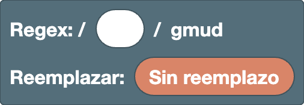

[ ]
Reemplazodentro del reemplazo
Raíz
El bloque base que contiene la regex y el reemplazo. Siempre hay exactamente uno en el espacio de trabajo.
Raíz (Regex / Reemplazar)

El bloque base para construir la regex y el reemplazo. Siempre está en el espacio de trabajo y no se puede eliminar.
- Hueco de Regex: aquí va el patrón. Al principio es un campo de texto, así que puedes escribir una regex directamente. Con clic derecho → "Convertir en bloques", lo que escribiste se convierte en bloques.
- Hueco de Reemplazar: mientras esté en "Sin reemplazo", las partes que coinciden se resaltan en el resultado. Si conectas bloques de reemplazo, se muestra el resultado ya reemplazado.
Las flags están fijas en gmud.
g(global): busca todas las coincidencias, no solo la primeram(multiline):^y$coinciden al inicio y al final de cada línea, no solo del texto completou(unicode): trata los emojis y caracteres parecidos como un solo carácter, y permite usar\p{...}d(hasIndices): también guarda dónde coincidió cada grupo (no cambia lo que se muestra en el resultado)
Ejemplos
- Regex
5, reemplazo6→1525se convierte en1626(se reemplazan todas las coincidencias)
Posición
Bloques que coinciden con una posición en lugar de con un carácter. Coinciden con cero caracteres y se combinan con otros bloques para indicar dónde debe estar la coincidencia.
Inicio de línea (^)

La posición al inicio de una línea. No coincide con ningún carácter, solo con una posición.
Como este editor usa la flag m, coincide al inicio de cada línea, no solo al inicio del texto completo.
Ejemplos
^a→aaa(solo la primera a)
Fin de línea ($)

La posición al final de una línea. No coincide con ningún carácter, solo con una posición.
Como este editor usa la flag m, coincide al final de cada línea, no solo al final del texto completo.
Ejemplos
a$→aaa(solo la última a)
Límite de palabra (\b / \B)

La posición en el borde de una palabra.
Elige el tipo en el menú desplegable.
\b: un límite de palabra, entre un carácter\w(letra, dígito o_) y cualquier otro carácter (o el borde del texto)\B: una posición que no es un límite de palabra
Ejemplos
\bcat\b→cat concat(solo cat como palabra completa)
Nota
\w solo incluye letras ASCII, dígitos y _, así que las letras con tilde como é y las escrituras no latinas no cuentan como caracteres de palabra.
En esos textos, los límites pueden no estar donde esperas (por ejemplo, \b cae dentro de café, justo antes de la é).
Mirar adelante / mirar atrás ((?=) / (?!) / (?<=) / (?<!))

Comprueba si el patrón interior aparece justo después (o justo antes) de la posición actual. Solo describe una posición, así que el patrón interior no forma parte de la coincidencia.
- Primer desplegable: vacío para mirar adelante (comprueba lo que viene después),
<para mirar atrás (comprueba lo que viene antes) - Segundo desplegable:
=para "está",!para "no está"
Ejemplos
\d+(?=px)→100px and 200em(solo los números seguidos de px)(?<=\$)\d+→$30 and 30€(solo los números después de $)
Caracteres
Bloques que deciden con qué caracteres coincidir. Los que también funcionan dentro de una clase de caracteres [ ] llevan la etiqueta "Clase de caracteres".
Texto (entrada libre)

Lo que escribas pasa a formar parte de la regex (o del reemplazo) tal cual. Puedes escribir cualquier cantidad de caracteres.
Ejemplos
cat→cats and dogs
Nota
Caracteres como . * + ? ( [ tienen un significado especial en una regex.
Para buscar el propio carácter, escápalo así: \., o usa el bloque de carácter escapado.
Cualquier carácter (.)

Coincide con un solo carácter cualquiera, excepto un salto de línea.
Ejemplos
a.c→abc a-c ac
Nota
No se puede usar dentro de una clase de caracteres ([.] significa un punto literal).
Dígito / carácter de palabra (\d / \D / \w / \W)

Elige el tipo en el menú desplegable.
\d: un dígito ([0-9])\D: un carácter que no es un dígito\w: una letra, un dígito o_([A-Za-z0-9_])\W: un carácter que no es letra, dígito ni_
Ejemplos
\d+→Price: 120 USD
Nota
\d y \w solo incluyen ASCII. No incluyen letras con tilde (é, ü), escrituras no latinas ni dígitos de ancho completo (１２３).
Para esos casos, usa las propiedades Unicode.
Espacio en blanco (\s / \S)

Elige el tipo en el menú desplegable.
\s: un carácter de espacio en blanco (espacio, espacio de ancho completo, tabulación, salto de línea, etc.)\S: un carácter que no es espacio en blanco
Ejemplos
\S+→foo bar(las dos palabras separadas por un espacio)
Propiedad Unicode (\p{} / \P{})

Coincide con un carácter según su tipo (su propiedad Unicode).
- Primer desplegable:
ppara caracteres de ese tipo,Ppara caracteres que no son de ese tipo - Segundo desplegable: vacío para una categoría general (letra, número, símbolo, ...),
Script=para un sistema de escritura (griego, cirílico, ...) - Campo de texto: el nombre de la propiedad
Nombres de uso frecuente:
- Categorías generales:
L(letra),N(número),P(puntuación),S(símbolo) - Escrituras:
Latin,Greek,Cyrillic,Han(caracteres chinos)
Ejemplos
\p{Script=Greek}+→alpha αβγ\p{L}+→café 123(a diferencia de\w, incluye las letras con tilde)
Nota
Los caracteres que comparten muchas escrituras, como los dígitos, los espacios y la mayoría de los signos de puntuación, pertenecen a Script=Common, no a una escritura concreta.
Para incluirlos, añádelos a una clase de caracteres, como en [\p{Script=Greek}\d].
Enlaces externos
-
Escape de clase de caracteres Unicode (MDN):
explica cómo escribir
\p{}y los tipos de propiedades que puedes usar (categorías generales, escrituras conScript=y propiedades comoEmoji)
Tabulación (\t)

Un carácter de tabulación. En el reemplazo, inserta una tabulación.
Ejemplos
- Regex
,, reemplazo\t→a,bse convierte ena⇥b(separado por tabulaciones)
Salto de línea (\n)

Un carácter de salto de línea. En el reemplazo, inserta un salto de línea.
Ejemplos
- Regex
,, reemplazo,\n→a,bse convierte ena,⏎b(un salto de línea después de cada coma)
Carácter escapado (\/ \. \( etc.)

Trata un carácter que tiene un significado especial en una regex como el propio carácter. Elige el carácter en el menú desplegable.
-
Patrón y clase de caracteres: se pueden usar
/ \ ^ $ ( ) . ? [ ] * { } | +.-solo se puede usar dentro de una clase de caracteres (para distinguirlo de un rango comoa-z). -
Reemplazo: se puede usar todo excepto
$(se convierte en el propio carácter, sin la\). Para insertar$, usa el bloque$$.
Ejemplos
1\.5→1.5 105(coincide con un punto literal)
Clase de caracteres ([ ] / [^ ])
![Bloque [ ]](../images/blocks/common/char_class.png)
Coincide con un carácter según lo que pongas dentro. Usa el icono del engranaje para cambiar el número de huecos.
Elige el tipo en el menú desplegable.
- Vacío (
[ ]): uno cualquiera de los caracteres de dentro ^([^ ]): un carácter que no es ninguno de los de dentro
Dentro puedes poner bloques de texto, \d \w, \s, \p{}, tabulación, salto de línea, carácter escapado y rango (a-z).
Con clic derecho → "Entradas externas", los huecos se apilan en vertical, lo que facilita la lectura cuando el contenido es largo.
Ejemplos
[aeiou]→hello[^0-9]+→12abc34
Rango (a-z)

Coincide con un carácter cuyo código está entre los dos caracteres. Escribe un carácter (o un escape como \-) en cada campo.
Ejemplos
[a-f]+→xcafey[α-ω]+→αβγABC(letras griegas minúsculas)
Nota
Los rangos siguen el orden de los códigos de carácter. [A-z] también incluye los seis caracteres [ \ ] ^ _ ` que están entre Z y a.
Para incluir solo letras, pon dos rangos, A-Z y a-z, y obtendrás [A-Za-z].
Unir / Opción
Bloques que combinan varios bloques. Unir los coloca en orden de izquierda a derecha, y Opción coincide con uno cualquiera de ellos. Usa el icono del engranaje para cambiar el número de huecos.
Unir

Coloca lo que pongas dentro en orden de izquierda a derecha. Usa el icono del engranaje para cambiar el número de huecos.
Con clic derecho → "Entradas externas", los huecos se apilan en vertical, lo que facilita la lectura cuando el contenido es largo.
Ejemplos
- Unir
^,\d+y$→^\d+$(líneas que solo contienen dígitos)
Opción (|)

Coincide con uno cualquiera de los elementos que pongas dentro. Las opciones se prueban de izquierda a derecha, y se usa la primera que coincide. Usa el icono del engranaje para cambiar el número de huecos.
Con clic derecho → "Entradas externas", los huecos se apilan en vertical, lo que facilita la lectura cuando el contenido es largo.
Ejemplos
cat|dog→a cat and a dog
Nota
| divide todo lo que hay antes y después, así que envuélvelo en (?:) al unirlo con otros bloques.
Por ejemplo, unir "a|b" y luego "c" da a|bc, que significa "a" o "bc".
Para "a o b, y luego c", usa (?:a|b)c.
Agrupación
Bloques que agrupan un patrón, o que guardan (capturan) la parte coincidente para usarla después. Las partes capturadas se pueden usar en referencias hacia atrás y en el reemplazo.
Grupo sin captura ((?:))

Agrupa el patrón interior en una sola unidad. No recibe un número para las referencias hacia atrás ni para el reemplazo.
Los bloques no se agrupan automáticamente, así que úsalo para delimitar el alcance de una repetición o de una opción (|).
Ejemplos
(?:ab)+→abababc(repite ab como una unidad)
Grupo de captura (( ))

Agrupa el patrón interior en una sola unidad y guarda (captura) la parte coincidente.
La parte capturada se puede usar en referencias hacia atrás y en el reemplazo como $1.
Los grupos se numeran 1, 2, 3, ... de izquierda a derecha (en el orden en que aparece su (). Los grupos con nombre también se cuentan.
Ejemplos
- Regex
(\d+)-(\d+), reemplazo$2-$1→12-34se convierte en34-12
Grupo con nombre ((?<name>))

Un grupo de captura con nombre. La parte capturada se puede usar en referencias hacia atrás con nombre y en el reemplazo como $<name>.
Crea un nombre con "Crear nombre de grupo…" en el menú desplegable. El nombre debe empezar por una letra y solo puede contener letras, dígitos y _.
Ejemplos
- Regex
(?<year>\d{4})-\d{2}, reemplazo$<year>→2025-08se convierte en2025
Referencia hacia atrás (\1)

Coincide con el mismo texto que capturó el grupo con ese número. Elige el número del grupo en el menú desplegable.
Ejemplos
(\w)\1→book(el mismo carácter dos veces seguidas)
Nota
Los grupos con nombre también cuentan en la numeración. Además, los números del menú desplegable dependen de cuántos bloques de grupo hay en el espacio de trabajo. Los grupos escritos como texto en el hueco de Regex no se cuentan.
Referencia hacia atrás con nombre (\k<name>)

Coincide con el mismo texto que capturó el grupo con ese nombre. Elige el nombre del grupo en el menú desplegable.
Ejemplos
(?<q>["'])\w+\k<q>→"abc" 'def"(texto entre el mismo tipo de comillas)
Repetición
Los bloques de repetición solo repiten el elemento que está justo antes.
Si pones varios caracteres dentro, solo se repite el último (abc+ repite solo la c).
Para repetirlos juntos, usa (?:).
Nota
Poner una repetición dentro de otra (anidarlas) puede hacer que la búsqueda sea extremadamente lenta.
Por ejemplo, usar (?:a+)+$ con un texto que falla al final, como aaaaaaaaaaaaaaaaaaaaaaaaaaaaab, hace que el número de combinaciones que hay que probar crezca exponencialmente con la longitud, y el navegador puede quedarse bloqueado.
(?:a+)+ significa lo mismo que a+, así que evita anidar repeticiones siempre que puedas.
Cero o una vez (?)

Coincide con el patrón interior una vez si está, o cero veces si no está (es opcional).
Elige el tipo en el menú desplegable.
- Vacío (
?): prefiere coincidir una vez ?(??): prefiere coincidir cero veces
Ejemplos
colou?r→color colour- Regex
(\d)?(\d+), reemplazo[$1][$2]→123se convierte en[1][23] -
Regex
(\d)??(\d+), reemplazo[$1][$2]→123se convierte en[][123](con??, el primer grupo no toma nada si puede, así que todos los dígitos van al segundo grupo.??solo marca la diferencia cuando la parte que viene después también puede tomar los mismos caracteres)
Cero o más / una o más veces (* / +)

Repite el patrón interior.
- Primer desplegable:
*para cero o más veces,+para una o más veces, tantas como sea posible - Segundo desplegable: elige
?para repetir el menor número de veces posible (*?+?)
Ejemplos
a+→caaat-
Regex
<.+?>, reemplazo vacío →<p><b>1</b> + <i>2</i> = 3</p>se convierte en1 + 2 = 3(solo se eliminan las etiquetas) -
Sin
?,<.+>toma todo desde el primer<hasta el último>como una sola coincidencia, así que se elimina todo
Prueba a añadir y quitar el ? en el ejemplo "HTML" para ver la diferencia.
Exactamente N veces ({N})

Repite el patrón interior exactamente N veces.
Ejemplos
\d{3}→1234567
N o más veces ({N,})

Repite el patrón interior N o más veces.
Elige el tipo en el menú desplegable.
- Vacío (
{N,}): repite tantas veces como sea posible ?({N,}?): repite el menor número de veces posible
Ejemplos
\d{2,}→1 22 333
De N a M veces ({N,M})

Repite el patrón interior como mínimo N veces y como máximo M. M no puede ser menor que N.
Elige el tipo en el menú desplegable.
- Vacío (
{N,M}): repite tantas veces como sea posible ?({N,M}?): repite el menor número de veces posible
Ejemplos
\d{2,3}→12345
Reemplazo
Conecta los bloques de reemplazo al hueco de Reemplazar de la raíz. En el reemplazo también puedes usar los bloques de texto, tabulación, salto de línea y carácter escapado.
Unir en el reemplazo

Coloca lo que pongas dentro en orden de izquierda a derecha dentro del reemplazo. Usa el icono del engranaje para cambiar el número de huecos.
Con clic derecho → "Entradas externas", los huecos se apilan en vertical, lo que facilita la lectura cuando el contenido es largo.
Ejemplos
- Unir
[,$&y]→ el reemplazo[$&]. Con la regex\d+,a1se convierte ena[1]
$ literal ($$)

Inserta el carácter $ en el reemplazo. Como $ tiene un significado especial en el reemplazo, un $ literal se escribe $$.
Ejemplos
- Regex
\d+, reemplazo$$$&→100se convierte en$100
Texto coincidente ($&)

Inserta el propio texto coincidente.
Ejemplos
- Regex
\d+, reemplazo($&)→a1 b22se convierte ena(1) b(22)
Texto antes de la coincidencia ($`)

Inserta todo el texto de destino que está antes de la coincidencia.
Ejemplos
- Regex
=, reemplazo=$`→a=se convierte ena=a
Texto después de la coincidencia ($')

Inserta todo el texto de destino que está después de la coincidencia.
Ejemplos
- Regex
=, reemplazo$'=→=bse convierte enb=b
Referencia a grupo ($1)

Inserta el texto que capturó el grupo con ese número. Elige el número del grupo en el menú desplegable.
Ejemplos
- Regex
(\d+)-(\d+), reemplazo$2-$1→12-34se convierte en34-12
Nota
Los grupos con nombre también cuentan en la numeración. Además, los números del menú desplegable dependen de cuántos bloques de grupo hay en el espacio de trabajo. Los grupos escritos como texto en el hueco de Regex no se cuentan.
Referencia a grupo con nombre ($<name>)

Inserta el texto que capturó el grupo con ese nombre. Elige el nombre del grupo en el menú desplegable.
Ejemplos
- Regex
(?<year>\d{4})-\d{2}, reemplazo$<year>→2025-08se convierte en2025